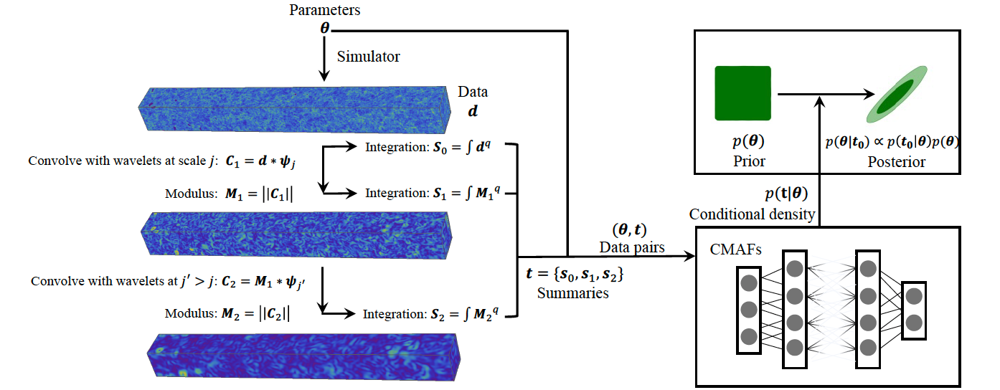

Denoising Diffusion Model for Astrophysics
Zhao, X., Ting, Y., Diao, K., & Mao, Y., 2023
Can Diffusion Model Conditionally Generate Astrophysical Images?

Research Highlights
Zhao, X., Ting, Y., Diao, K., & Mao, Y., 2023
Can Diffusion Model Conditionally Generate Astrophysical Images?
Zhao, X., Zuo, S., & Mao, Y., 2023
Zhao, X., Mao, Y., & Wandelt, B. D., 2022
Implicit Likelihood Inference of Reionization Parameters

Zhao, X., Mao, Y., Cheng, C., & Wandelt, B. D., 2022
Simulation-Based Inference of Reionization Parameters From 3D 21 cm Lightcones